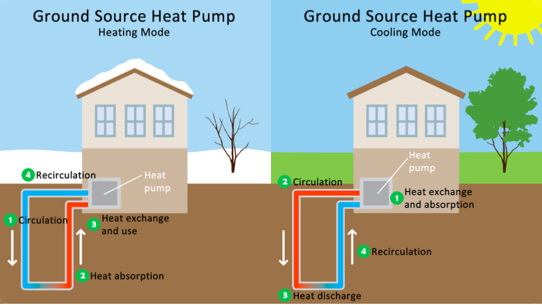
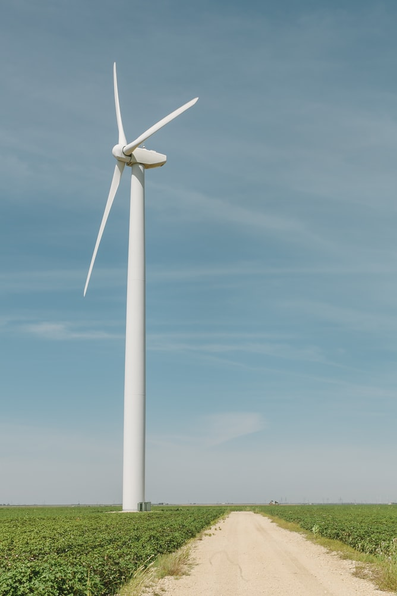

Bio-Friendly Home
Making your home Bio-Friendly, is one of the many ways you can help the environment, and save energy. It is also a good way to reuse natural reusable energy without depending exclusively on non-renewable resources like fuel or gasoline.
When making an energy-efficient improvement to your home here are some components that will make it more environmentally friendly.
Green Roof:

Geothermal Heating and Cooling:

While solar panels are fantastic for harvesting natural heat, geothermal systems are increasing in popularity due to their ability to both heat and cool homes. In the winter they absorb solar heat from the ground and direct it into the home. while in the summer they soak up excess interior heat and direct it into a subterranean Tank. Then the cooler soil and transformed into water that then recirculates into the home as cool, dry air. Geothermal energy can truly improve your energy efficiency, resulting in a lower cost of living and a more comfortable home. No matter what your climate is, the ground still maintains a more consistent temperature than the air above.
LED Light Bulbs:

Low-Pressure Water feature:

Solar Panel:

Wind Turbines:

Windmills were the biggest industrial power generator in the world. They
are an applicable energy source to your home, by converting natural wind energy into pure power that doesn't emit potentially harmful fumes. It also allows homeowners to power their homes at a fraction of regular heating costs while protecting the environment at the same time.